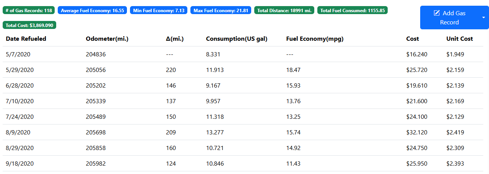
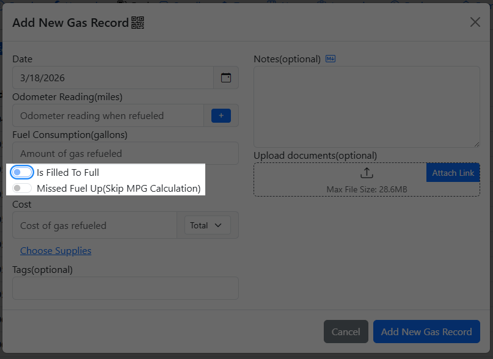
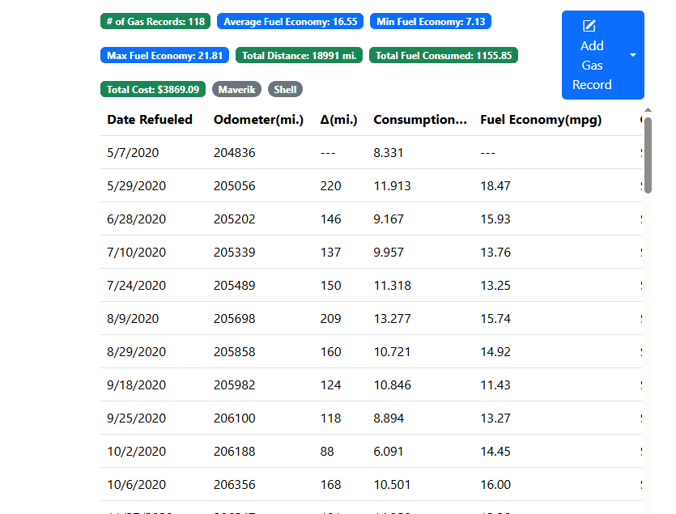
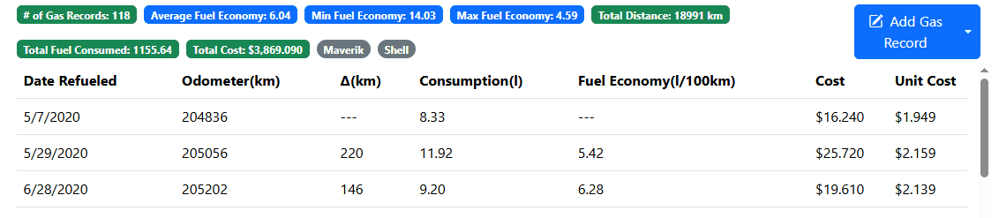

Fuel Records
The Fuel tab keeps track of the fuel mileage for your vehicle.

LubeLogger supports fuel mileage calculation in the following formats: - American Imperial (MPG) - European/Asian Metric (L/100Km) - British(Purchase Gas in Liters and calculate fuel mileage as Miles per Imperial UK Gallons) - Electric Vehicles (mi./kWh or kWh/100Km)
Initial Fuel Up
In order to calculate fuel mileage, you must first have an initial fuel entry with the current odometer reading. An odometer reading is needed so that the app can calculate the distance traveled between fuel ups. It is recommended that you fill it up to full for the first entry.
Imperfect Fuel Ups
For the most accurate results it is recommended that you always fill your vehicle up to full and not miss any fuel ups, but sometimes things happen, which is why we provided the following:
Partial Fuel Ups
On the occassions that you cannot fill your vehicle up to full, you can defer the fuel mileage calculation by unchecking the "Is Filled To Full" switch. Doing this tells the app to defer fuel mileage calculation until the next Full Fill Up.

Note for Electric Vehicles(EV)
LubeLogger does not support calculating consumption by charge percentages because the State of Charge(SoC) readout is inherently inaccurate based on multiple variables - such as nominal battery capacity, battery degradation, temperature, and margins of errors and buffers built into your Battery Management System(BMS).
We can only rely upon the base units that are truly measurable such as kWh consumed.
If you always charge to the same SoC(e.g.: 80%), then every charge to 80% should always be considered a full charge, every charge less than 80% would be considered a partial charge. In this scenario, your consumption would be the amount of kWh consumed to bring your battery SoC back up to 80% every charge. Ideally you shouldn't ever charge above 80%, but if you do sometimes charge to 100%, then you need to determine if any charges less than 100% should be considered a partial charge at your discretion.
If you frequently charge to random percentages just to have enough range for your trip, you cannot rely on the kWh readout on the charger(e.g.: you start at 60%, traveled some distance, then charged to 50% so you can complete your trip). In this case, the only reliable metric you have for your consumption is the kWh consumed during the trip(not available in all EVs) and you should record this fuel record before charging instead of after.
Missed Fuel Ups
Check this if you have missed a fuel up record prior to adding this fuel record. This effectively resets the fuel mileage calculation and will show up as $0 or "---" in the fuel records. Checking this ensures that the average fuel mileage calculation isn't skewed due to missed fuel ups.
Calculation of Average Fuel Mileage
Average MPG is calculated by excluding the initial and missed fuel ups, then taking the difference between the min and max odometer reading and dividing it by total amount of gas consumed(if Metric then it is further divided by 1/100). This method will include all of the gas consumed by full and partial fuel ups.
Fuel Mileage by Tags
To track fuel mileage across different fuel grades, gas stations, etc, you can either rely on the tagging functionality or add an extra field to the gas record. Filtering the records by tags or via searching the records will automatically update the average, min, and max fuel mileage labels.

Fuel Units
The consumption, fuel mileage, and odometer units are determined by two settings: "Use Imperial Calculation" and "Use UK MPG Calculation"
| Setting | Use UK MPG Calculation Checked | Use UK MPG Calculation Unchecked |
|---|---|---|
| Use Imperial Calculation Checked | Distance: Miles, Consumption: Liters, Fuel Mileage: Miles per UK Gallons | Distance: Miles, Consumption: Gallons, Fuel Mileage: MPG |
| Use Imperial Calculation Unchecked | Distance: Miles, Consumption: Liters, Fuel Mileage: l/100mi. | Distance: Km, Consumption: Liters, Fuel Mileage: l/100km |
Alternate Fuel Units
If you wish to see alternate units which converts the calculated units within the Gas Tab, you can right click on the table headers for Consumption and Fuel Economy. These settings persists for the user, so the next time you login to LubeLogger it will automatically perform the conversion for you.

Consumption
For consumption, the units are cycled between US gal, Liters, and Imp Gal(UK). Changing the consumption unit will also change the unit cost.
Fuel Economy
The units can only toggle between l/100km and km/l, which means that this unit cannot be converted if your fuel economy unit is not l/100km. Changing the fuel economy unit will also update the values in the Average, Min, and Max Fuel Economy labels as well as the Fuel Economy Unit in the Consolidated Report.
Importing from CSV/Fuelly/SpiritMonitor.de
LubeLogger supports importing CSV exports from other apps, below lists the column names that are acceptable/mapped to our data points:
| LubeLogger Data Field | Imported CSV |
|---|---|
| date | date, fuelup_date, or columns for day, month, and year |
| odometer | odometer, odo |
| fuelconsumed | gallons, liters, litres, consumption, quantity, qty, fuelconsumed |
| cost | cost, total cost, totalcost, total price |
| notes | notes, note |
| partialfuelup(inverse of isfilltofull) | partial_fuelup, partial tank, partial_fill |
| isfilltofull | isfilltofull, filled up |
| missedfuelup | missedfuelup, missed_fuelup, missed fill up, missed_fill |
| tags | tags |
Importing from SimplyAuto
SimplyAuto exports all of its records in a consolidated CSV file, it is up to the user to separate out Fuel Records from Service Records, etc before importing the file.